This page collects selected digital fabrication projects that connect computational design with physical making—from robotic toolpaths and pick-and-place experiments to CNC-produced, full-scale plywood structures—and climate-responsive envelope prototyping.
ROBOTISM: Robotic Fabrication Workshop (Pick & Place + Light Painting)
Workshop project • Group work • KUKA KR6 (KRC2/KRL) • Rhino/Grasshopper toolpaths
Summary
ROBOTISM is a 10-day workshop project in robotic fabrication and computational design. Working in teams, we learned the fundamentals of robot programming and toolpath thinking, then applied them in two tracks: (1) light painting using robot-generated motion paths, and (2) pick-and-place fabrication using a KUKA KR6 equipped with a pneumatic gripper. The final outcome was a full-scale plywood pavilion assembled from robot-placed components and completed with a collaborative human–robot fastening workflow.
KUKA KR6KRC2 + KRLRhino + GrasshopperG-codePick & Place18mm plywood
Project at a glance
Context
Workshop project • Group work • Robotic fabrication + computational design
Institution: University of Tehran
Role: Design, software, and fabrication
Robot platform: KUKA KR6 with KRC2 controller
End-effector: Pneumatic gripper + air pump system
Key constraints
Material limit: ~40 m² of 18mm plywood
Robot reach: ~1.6 m (influenced segmentation and assembly planning)
Process requirement: collision-aware paths and stable intermediate states
Outcomes
Light-painted drawings generated from Grasshopper-defined curves and robot motion paths
Pick-and-place prototypes exploring stability, stacking logic, and assembly sequencing
A fabricated pavilion split into 9 transportable sections and assembled on campus
Workshop process
The workshop began with an introduction to KRL syntax and the fundamentals of generating machine-readable motion instructions. After the initial training, we worked in small groups through a sequence of exercises aimed at building intuition for toolpaths, robot constraints, and fabrication-ready geometry.
1) Toolpath thinking
We practiced defining continuous motion paths and understanding how speed, continuity, and reach constraints shape what is fabricable.
2) From parametric curves to motion
Curves were authored in Rhino/Grasshopper, then translated into robot-readable instructions (G-code/KRL workflow depending on the exercise).
3) Physical validation
Each digital path/sequence was validated in the real workspace—checking collisions, grip reliability, and whether the assembly remains stable during placement.
Exercise 1: Light painting
For the first exercise, we defined continuous curve patterns in Grasshopper 3D and used them to generate a robot motion path. After producing the corresponding instructions, we mounted a simple LED on the robot head and captured long-exposure photographs while the robot traced the curves in space.
Light painting in the lab using an LED tool mounted on the robot.Parametric curve pattern translated into robot motion.Exploring continuity, speed, and curvature in a single uninterrupted path.
Exercise 2: Pick & place prototypes
In the next exercise, each group designed a structure using wooden pieces with fixed dimensions and counts. The objective was to assemble the structure via pick-and-place while ensuring stability throughout the sequence—prioritizing an assembly logic that could stand without relying on screws or glue during placement.
Early stacking tests to verify grip, alignment tolerance, and stability.Sequencing matters: stable intermediate states reduce failure during placement.Iterating on geometry and stacking logic to increase height while maintaining balance.
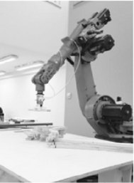
Close-up: pneumatic end-effector placing components precisely on the build area.
Final product: Plywood pavilion
After the introductory tasks, teams proposed pavilion concepts at the scale of 1:1. Given the available material (~40 m² of 18mm plywood), designs were reviewed by a jury and one concept was selected for fabrication. The final design was refined and prepared for robotic assembly.
Form finding
We explored surface-driven alternatives before converging on an arched pavilion geometry that balanced buildability and structural stability.
Option AOption BOption COption D
Segmentation + assembly planning
Because the robot reach was limited (~1.6 m) and the build site introduced placement constraints, the arch was divided into transportable sections. The strategy was to halve the arch and split the halves into 4 and 5 parts (a total of 9 sections).
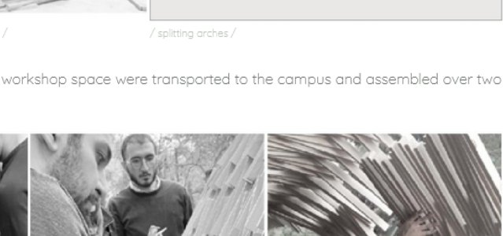
Design segmentation strategy used to align with robot reach and site constraints.
Connection strategy
Two approaches were explored for connecting pieces during assembly: (1) a robotic gluing routine using a glued roller, or (2) a collaborative workflow where a person fastens parts after robot placement using a pneumatic nail gun. Due to time constraints and practical considerations, the collaborative method was selected for the final build.
Robotic placement along the pavilion curve with a human-in-the-loop fastening strategy.
Process montage: simulation views, workshop fabrication scenes, and on-site installation steps.
On-site installation
The fabricated sections were transported to campus and assembled on site. Installation was completed in approximately two hours, demonstrating how up-front planning (segmentation, sequencing, and connection strategy) can make large-scale fabrication workflows feasible within tight workshop timelines.
Transporting and positioning a fabricated section.Collaborative assembly: alignment + fastening during installation.Final adjustments as the pavilion geometry is locked in place.
What this project demonstrates
Bridging parametric design and fabrication
Parametric geometry becomes fabrication-ready only when translated into stable sequences, tolerances, and collision-aware robot motions.
Designing for constraints
Robot reach, end-effector behavior, and material limits directly shape form, segmentation, and assembly strategy.
Human–robot collaboration
Hybrid workflows (robot placement + human fastening) can be a practical solution for time-limited contexts such as workshops and rapid prototyping.
Team: Group work (design + programming + fabrication)
INTEGRITY: Nexorade Plywood Pavilion
Academic project • Group work • University of Art • Role: conceptualization, fabrication
Summary
INTEGRITY is a full-scale plywood pavilion developed as a digital fabrication project using a Nexorade structural logic. The project was designed and tested digitally, produced from 18 mm plywood sheets using CNC cutting, and assembled on site using screwed connections (no adhesives).
Role: Conceptualization, design development, and fabrication
Supervisor: Ph.D. Seyed Ali Deragisoo (et al.)
Material + making
Material: 18 mm plywood sheets
Production: CNC-based digital fabrication
Assembly: screw-fastened elements and on-site installation
Goal
Translate a parametric surface into a buildable lattice
Develop repeatable element logic and connection details
Validate constructability through full-scale prototyping and assembly
Parametric workflow
The digital pipeline starts with defining main curves and a guiding surface, then generating a lattice pattern that is adjusted by rotating and extending elements to achieve structural continuity. Element geometry and connection details are finalized to support straightforward assembly and accurate positioning during fabrication.
Diagram sequence: curves → surface → pattern → element rotation/extension → pavilion form.Element development: extrusion along surface normals, extension logic, and final element shaping for assembly.
Fabrication and assembly
After digital testing and finalization, elements were produced and labeled for assembly. CNC milling supported accurate cuts and alignment features, while the on-site build relied on screw fastening and coordinated lifting/positioning to form the final pavilion geometry.
CNC cutting/milling used to produce plywood components with consistent tolerances.Finishing process to protect and unify the plywood surface.Screw-fastened connections: fast, reversible, and workshop-friendly.
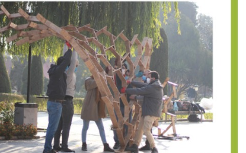
On-site assembly and positioning of large sections to complete the final structure.
Detail view: Nexorade lattice geometry and repetitive element logic that supports the global form.
A modular, climate-responsive façade system inspired by chameleons’ independently moving eyes—designed through parametric modeling + daylight simulation, then validated with a sensor-driven physical prototype.
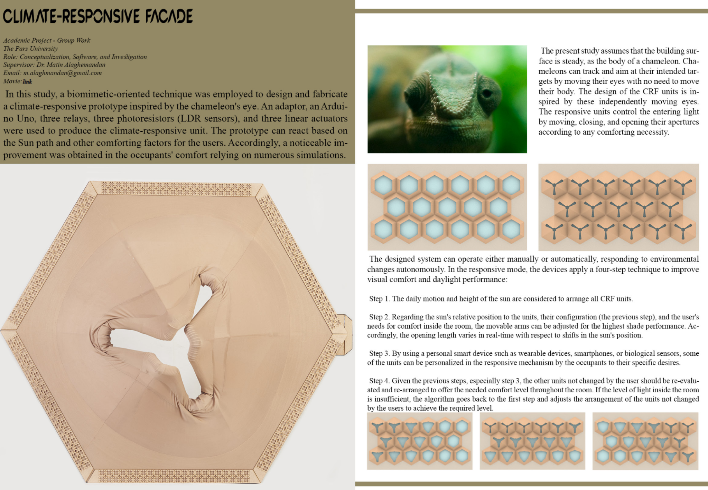
Project overview poster: biomimetic inspiration, responsive unit patterns, and the textile-based prototype.
Project at a glance
The Climate-Responsive Façade (CRF) is a kinetic shading system composed of hexagonal textile modules. Each unit can pivot in multiple directions to adjust aperture size and shading direction based on sun position and user comfort needs.
Many kinetic façades rely on rigid parts and simple folding motions, which can limit the granularity of control. This project explores a textile-based approach that allows smooth, multi-axial transformations. The unit logic is inspired by the chameleon eye: independent movement enables targeted control—adjusting each module locally without forcing the entire surface to move as one.
Biomimetic reference: independently moving eyes enable precise targeting and tracking.
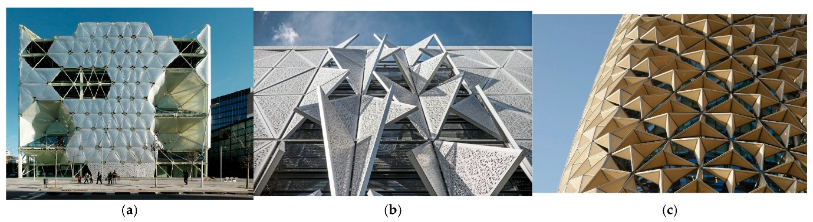
Context: responsive façades that change geometry to manage daylight, glare, and heat gain.
Responsive behavior and control logic
The designed system supports both manual control (user-selected configurations) and an automatic responsive mode (sensor + solar logic). In responsive mode, the workflow follows a four-step loop:
Sun-path setup: use the daily solar motion + altitude to establish candidate configurations for the façade units.
Adaptive aperture: adjust opening length/direction in real time based on relative sun position and targeted shading needs.
Personalization: optionally integrate preferences through personal devices (e.g., wearable / smartphone / bio-sensor inputs) to prioritize comfort.
Re-evaluation: re-check indoor light levels and reconfigure remaining units; if illuminance is insufficient, iterate from Step 1.
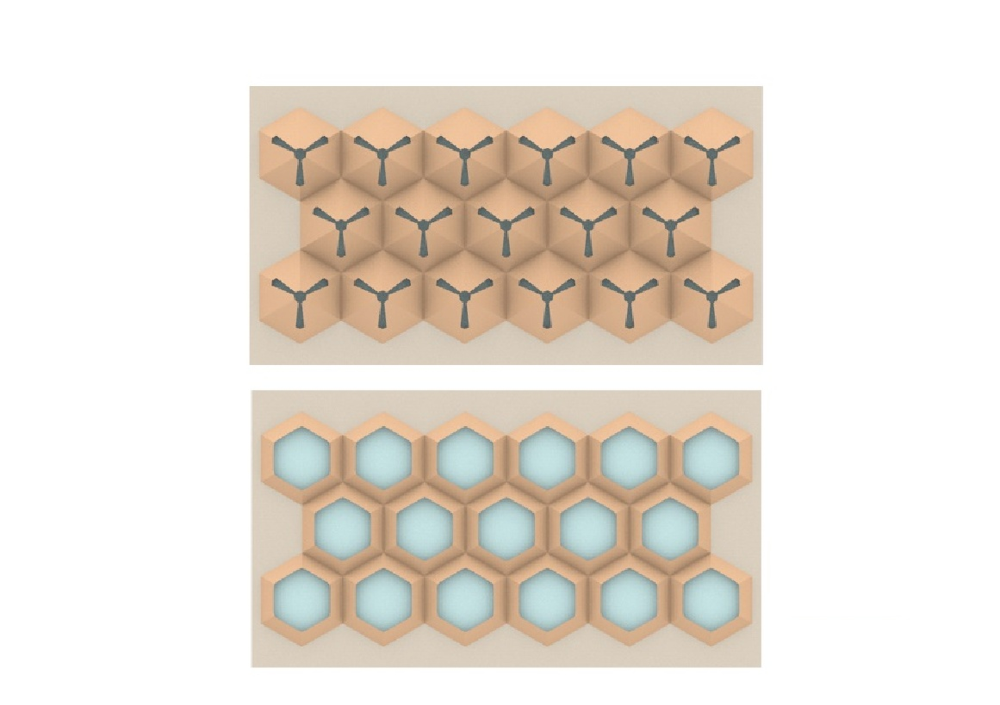
Unit behavior: fully opened vs. fully closed textile aperture (module-level control).
A parametric pipeline in Rhino/Grasshopper generated unit geometries and candidate states, then daylight simulations evaluated visual comfort performance in a south-facing office room in Yazd, Iran (hot-arid climate). The study compared the CRF to two baselines:
WCS: alternative shading baseline (comparison façade system).
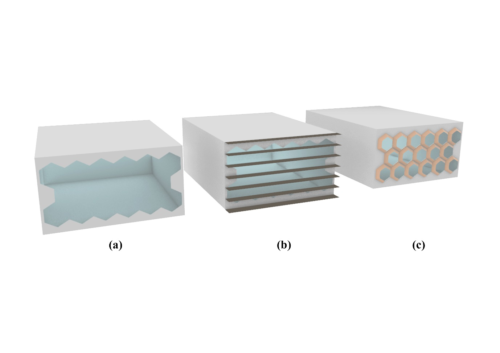
Simulation setup: comparable models used to evaluate daylight distribution and glare.
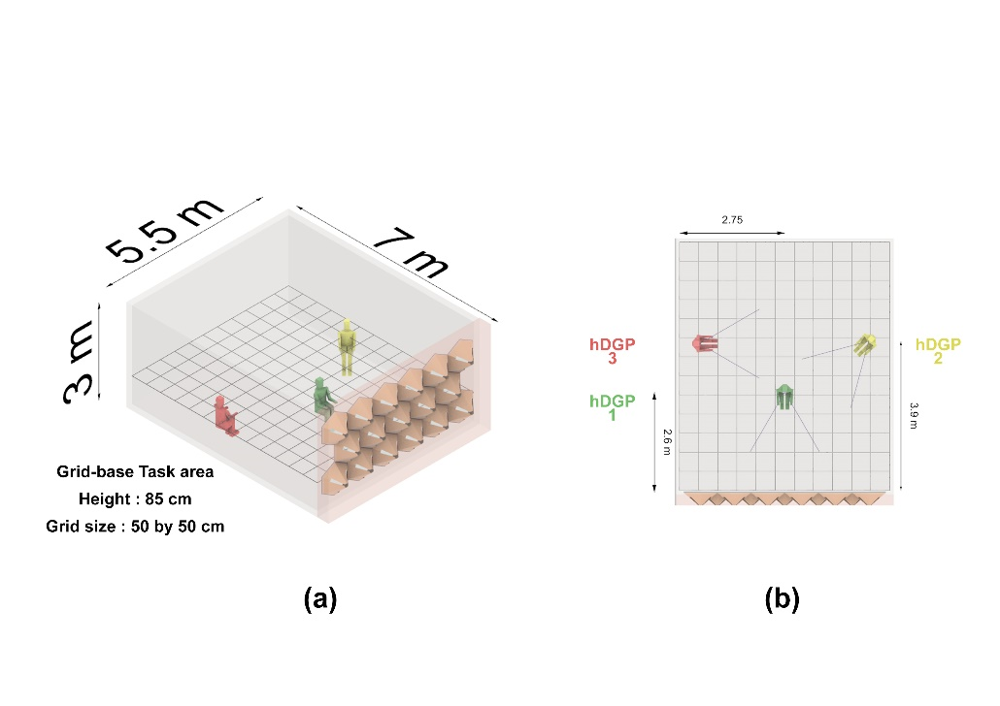
Room and sensor setup used for glare (DGP) evaluation at three viewpoints.
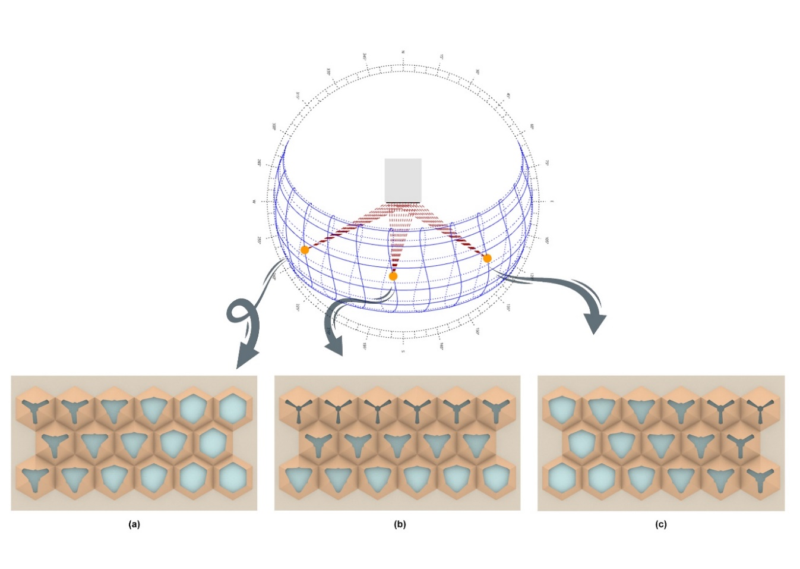
Sun-path driven configurations: unit orientations change at 09:00 / 12:00 / 15:00 to maintain comfort.
Across simulated time slices, the CRF maintains illuminance in the comfortable range more consistently than the baselines and reduces glare (lower DGP) at multiple sensor points. Notable patterns include:
Comfortable daylight (hUDI): CRF is consistently high (often ~95–100%).
Over-illumination (hUDI exceed): CRF minimizes exceedance (often 0–6%), compared to substantially higher exceedance in baseline systems.
Glare (DGP): CRF shows markedly lower DGP values across sensor points, especially at noon conditions.
Daylight + glare performance comparison (WSS vs CRF)DGP is shown at three sensor points (1–3). hUDI = 100–2000 lux; hUDI (Exceed) = >2000 lux; hDA = daylight autonomy.
Time
WSS DGP1%
WSS DGP2%
WSS DGP3%
WSS hUDI%
WSS hUDI (Exceed) %
WSS hDA%
CRF DGP1%
CRF DGP2%
CRF DGP3%
CRF hUDI%
CRF hUDI ( Exceed) %
CRF hDA %
09:00, March 21st
55
33
29
85
15
100
33
27
21
95
5
100
12:00, March 21st
79
43
30
71
29
100
34
25
22
97
3
98
15:00, March 21st
54
40
25
83
17
100
34
28
21
100
0
100
09:00, June 21st
49
33
26
93
7
100
33
25
21
100
0
75
12:00, June 21st
60
38
27
74
26
100
34
27
22
94
6
100
15:00, June 21st
44
32
24
94
6
100
33
27
21
100
0
76
09:00, December 21st
64
33
35
69
31
100
33
24
22
97
3
90
12:00, December 21st
92
50
37
56
44
100
34
29
22
95
5
92
15:00, December 21st
66
52
28
70
30
100
33
28
24
93
7
81
Average
63
39
29
77
23
100
33
27
22
97
3
90
Daylight + glare performance comparison (WCS vs CRF)Same metrics as above, reported across 09:00 / 12:00 / 15:00 for March 21, June 21, and December 21.
The physical prototype translates the digital unit logic into a resilient mechanical system using three linear actuators (for three movable arms) and a stretch textile skin that accommodates multi-directional deformation. Sensor feedback is provided through LDR photoresistors and processed by an Arduino UNO, with Grasshopper + Firefly enabling a live control loop.
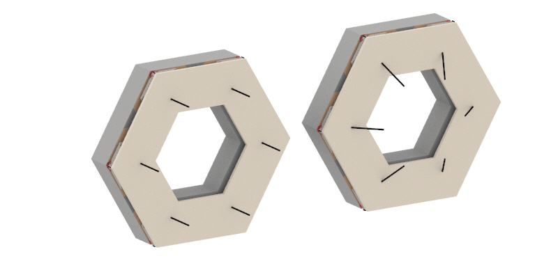
Digital unit design (geometry + arm logic).Configuration logic: multiple aperture states driven by three actuated arms.
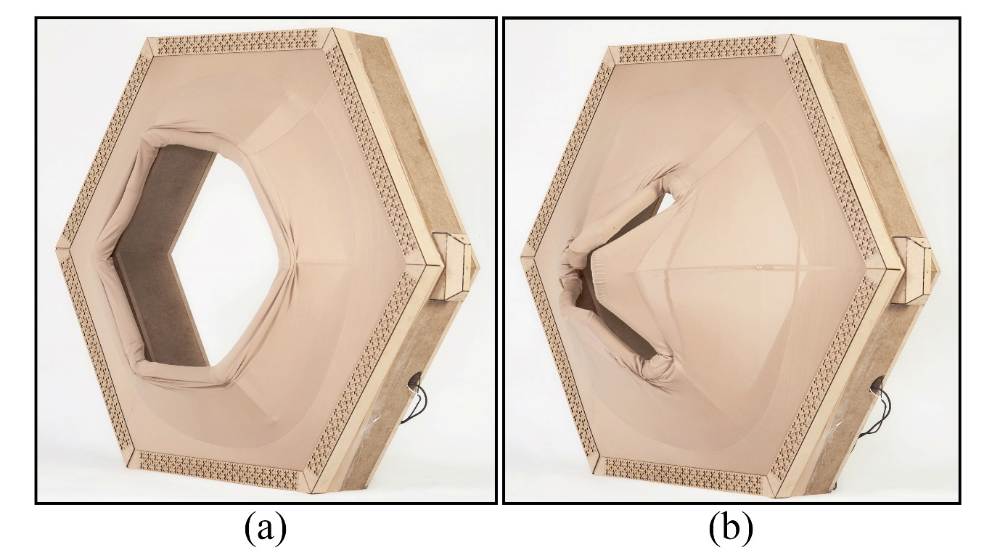
Final prototype: fully opened vs. fully closed configuration.
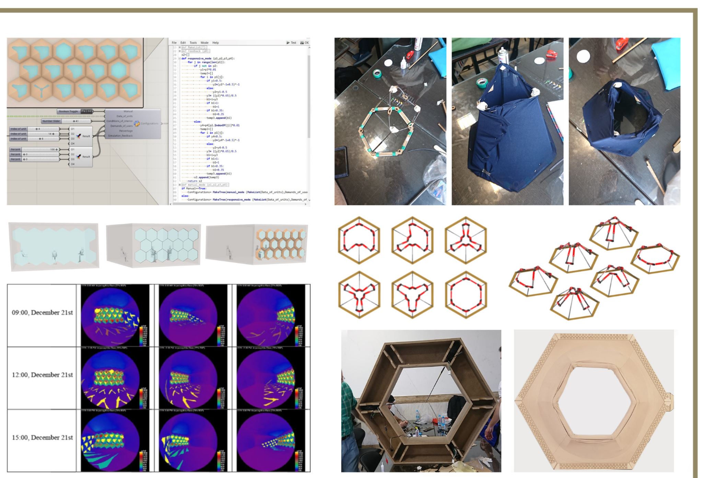
End-to-end pipeline: parametric definition, control logic, fabrication, and performance evaluation.